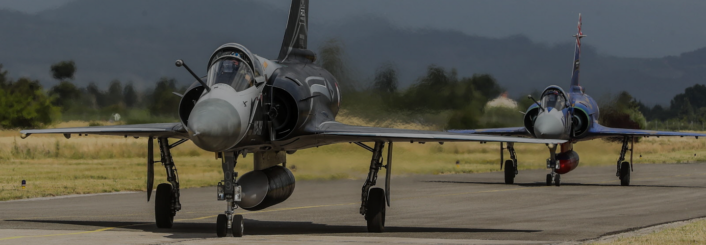

Déroulement du projet
Le projet COG’AIR SHOW s’est déroulé sur toute la première année, selon une progression structurée en plusieurs étapes clés, de l’appropriation du sujet jusqu’à la production des livrables finaux.
1. Prise en main du sujet
- Analyse de la documentation existante et définition des objectifs.
- Découverte du simulateur Mirage 2000 et du logiciel DCS World.
- Réunions avec le tuteur pour cadrer les attentes.
2. Répartition des rôles et organisation interne
- Constitution d’un planning de travail et d’une matrice d’implication.
- Répartition des tâches entre les membres selon leurs compétences et préférences.
- Suivi régulier à travers des points hebdomadaires.
3. Phase d’apprentissage et de test
- Formation à l’utilisation du simulateur et tests de fonctionnalités.
- Recueil des retours auprès d’étudiants experts pour améliorer la compréhension technique.
- Repérage et documentation des procédures critiques (démarrage, vol, navigation…).
4. Production des livrables
- Rédaction du manuel de pilotage, structuré et illustré.
- Réalisation d’une vidéo tutorielle montrant une mission complète.
- Mise en ligne des livrables et préparation du site web de présentation.
5. Outils de conception et de communication
- Outils de conception : YouTube, Canva, Sony Vegas.
- Outils de communication : Gmail, Google Drive, WhatsApp.
6. Préparation de la soutenance
- Réalisation du diaporama de présentation.
- Répétitions de l’oral pour assurer clarté et fluidité.
- Finalisation du site web et relecture complète de tous les contenus.
Ce déroulement a permis une montée en compétences progressive, un respect des délais, et une cohérence dans la production finale.